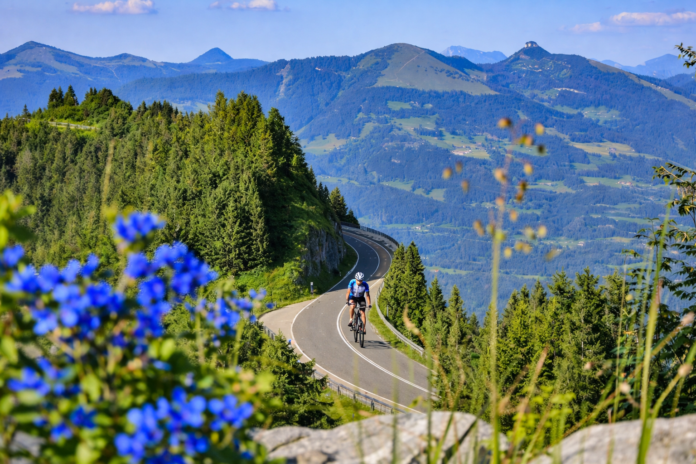

8. Rossfeld Panorama Straße
47.628433, 13.09446

A Rossfeld Panoramastraße Berchtesgaden fölött futó, fizetős panorámaút, amelyet gyakran Németország legmagasabban vezető panorámaútjaként említenek. A gerincen haladva több kilátópont is nyílik, egyszerre látni a Berchtesgadeni‑Alpokat és a Salzburg felé nyíló tágas medencéket.
A magashegyi jelleg itt főleg a távlatokban és a gyorsan változó fényekben érződik: tiszta időben a távolabbi hegycsoportok, köztük a Dachstein iránya is felvillanhat. A kilátóhelyek rövid sétákkal elérhetők, így az út nem csak átkelés, hanem egymásra fűzött nézőpontok sora.
A Rossfeld neve történelmi réteget is hordoz, mert a környék az Obersalzberg közelsége miatt a 20. században kiemelt politikai tér volt. Ma a panorámaút elsődlegesen táji élmény, de a vidék története a közelben lévő dokumentációs helyszíneken is követhető.